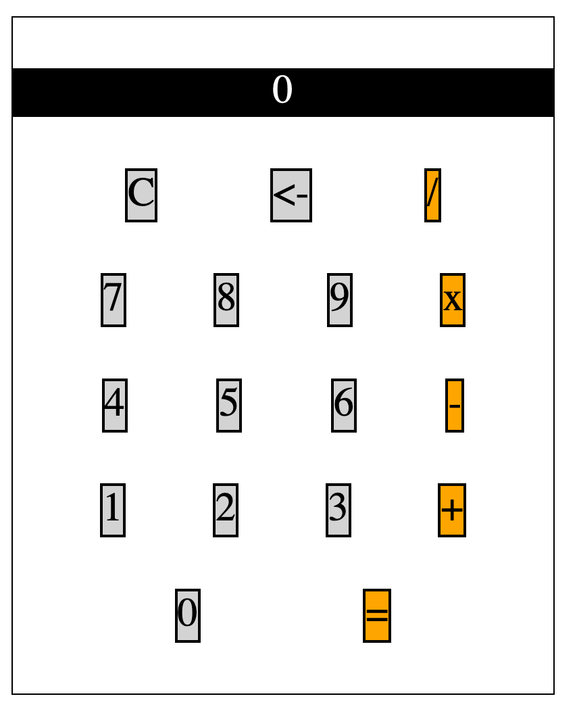

2019-04-30
Tags: javascript
Plan for the day
- Work on vanilla JS calculator from Complete Intro to Web Development, v2 class.
Learned today
I started working on the calculator by getting HTML and CSS setup first. This is the current visual state:

Obviously this is nothing great. I have issues with flex and aligning items; I also need to figure out how to stretch the buttons to get 100% coverage of background color. :(
I think I might read about grid more, because something tells me this would be way easier.
Resources list
- Centering a block horizontally and vertically
- The best and only guide to flexbox (I get back to it constantly!)